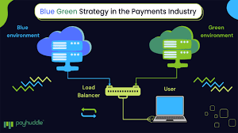
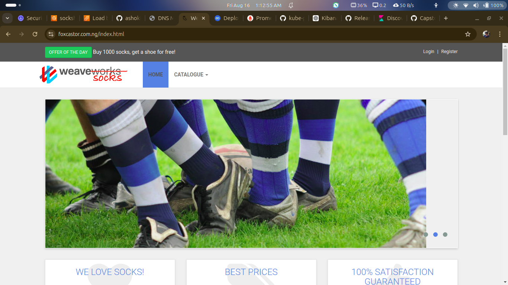

1. Blue-Green Deployment on AWS ECS
Designed and deployed a production-ready Blue-Green deployment pipeline for a Node.js application on AWS ECS Fargate using Terraform. The project leverages an Application Load Balancer for seamless traffic switching, enabling zero-downtime deployments and automatic rollback during deployment failures.
Technologies Used

2. Sock Shop Microservices Application
Deployed and managed the Sock Shop microservices application using Docker and Kubernetes. Configured container orchestration, networking, service discovery, and scaling while implementing monitoring to ensure high availability and reliability.
Technologies Used

3. Universal Scripting
Developed a collection of reusable Bash scripts to automate routine system administration tasks including user management, backups, package installation, service monitoring, and log management. The toolkit improves operational efficiency and simplifies Linux server administration.